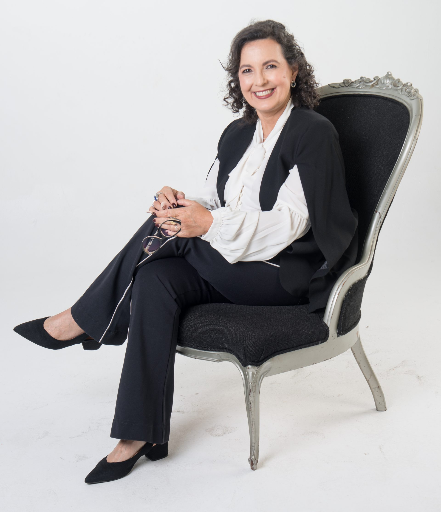
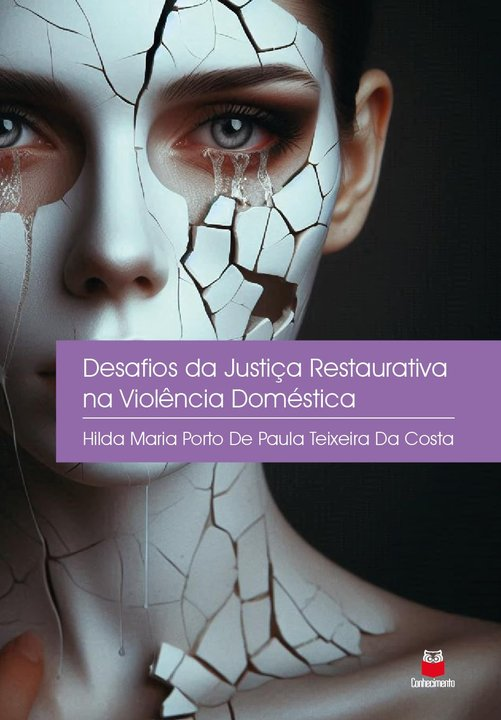

Psicologia · Mediação · Justiça Restaurativa
Passei décadas ouvindo histórias de conflito — primeiro como desembargadora, depois como psicóloga e mediadora. Trabalho com pessoas e organizações que precisam entender o que está em jogo antes de tentar resolver.
Atendimento clínico · Mediação · Justiça Restaurativa
Desembargadora aposentada
TJMG · Décadas na magistratura
Doutora em Justiça Restaurativa
UFMG · Livro publicado pela Conhecimento
Psicanalista · EBP
Psicóloga CRP 04/[PREENCHER]
30+
anos na magistratura
UFMG
Doutora em Justiça Restaurativa
EBP
Psicanalista · Escola Brasileira
Livro
Autora pela Ed. Conhecimento
"O conflito revela o que o cotidiano esconde."
— Hilda Teixeira da Costa
Sobre
Durante décadas como magistrada no Tribunal de Justiça de Minas Gerais, aprendi que por trás de cada processo havia uma pessoa — com suas contradições, seus vínculos rompidos, sua dor não dita. Casos que chegavam à Justiça eram, na maioria das vezes, conflitos humanos que nunca encontraram outro espaço para existir.
Essa percepção me levou à psicologia e à psicanálise, e também à pesquisa sobre mediação — minha tese de doutorado, publicada pela editora Thoth, propõe uma leitura integrativa entre mediação, justiça restaurativa e dialética. Na clínica, meu trabalho mescla psicanálise e abordagem sistêmica: duas tradições que se completam ao compreender como o sofrimento de um sempre acontece dentro de vínculos.
Hoje trabalho com três frentes que conversam entre si: atendimento clínico para indivíduos e casais, mediação de conflitos relacionais e familiares, e projetos de Justiça Restaurativa em organizações e grupos.
Como ex-coordenadora do programa de Justiça Restaurativa no TJMG, conduzi processos de mediação e reparação entre partes em conflito real — metodologia que incorporo ao trabalho com organizações e com grupos.
Psicologia, Mediação & Vínculos
Psicanálise não é sobre silenciar o que dói. É sobre entender de onde vem — e o que isso revela sobre quem você é e sobre os vínculos que você constrói.
Serviços
Cada frente tem um escopo próprio — mas conversam entre si. A escuta é o ponto de partida; o formato, o ritmo e a duração se desenham depois disso.
Um espaço de escuta que mescla psicanálise e abordagem sistêmica. Para quem sofre nos vínculos (afetivos, familiares, de trabalho) e para casais que querem entender o que acontece entre os dois antes de decidir o próximo passo.
Online ou presencial · Sessões de 50 min (individual) ou 80 min (casais) · Semanal ou quinzenal
Falar sobre atendimento →Processo estruturado de condução de conflito entre duas ou mais partes — familiares, patrimoniais, societários ou de trabalho. Baseado na pesquisa que desenvolvi no doutorado, o trabalho combina mediação tradicional com elementos restaurativos e dialéticos.
Projetos de 4 a 8 sessões · Online ou presencial · Conversa inicial sem custo
Falar sobre mediação →Para organizações, grupos e instituições que vivem uma ruptura relacional — entre sócios, entre líderes, numa equipe, após uma crise. O trabalho segue a metodologia que coordenei no TJMG: círculos, conversas preparatórias e processos de reparação com escopo definido.
Projetos sob medida · Diagnóstico inicial sem custo · Escopo e duração definidos no diagnóstico
Falar sobre projeto →
Tese de doutorado publicada
Minha tese de doutorado, defendida na UFMG e publicada pela editora Thoth. Uma proposta de leitura integrativa entre três tradições de resolução de conflito — que fundamenta a forma como trabalho em consultório, em mediação e em projetos restaurativos.
Editora Conhecimento · agosto de 2024 · 202 páginas · ISBN 978-65-5387-309-4
Ver na Amazon →Para quem
Pessoas físicas
Adultos que estão no sofrimento — nos vínculos, no trabalho, nas escolhas — e que querem entender o que está em jogo antes de tentar resolver.
Empresas e organizações
Empresas, equipes de liderança ou sócios em ruptura relacional, com impacto nos resultados — que precisam de um processo estruturado com começo, meio e fim.
Grupos e casais
Casais em crise, famílias em conflito aberto, grupos de trabalho ou comunidades que precisam de um espaço mediado para que todas as vozes caibam.
Dúvidas frequentes
O atendimento clínico individual (ou de casais) é um processo de escuta continuada sobre o sofrimento e os vínculos da pessoa, sem foco em um conflito específico com terceiros. A mediação é um processo estruturado, com começo e fim, voltado para resolver um conflito concreto entre duas ou mais partes — pode ser familiar, patrimonial, societário ou de trabalho.
Justiça Restaurativa é uma abordagem de resolução de conflitos focada em reparar o que foi rompido, não em definir quem tem razão. Faz sentido quando houve uma ruptura relacional em um grupo — uma equipe, uma empresa, uma família ampliada, uma comunidade — e as partes precisam ser reintegradas para seguir convivendo. Trabalhei diretamente com Justiça Restaurativa na minha carreira jurídica e trago essa metodologia para o âmbito privado.
Uma integração entre psicanálise (formação pela Escola Brasileira de Psicanálise — EBP) e abordagem sistêmica. A psicanálise olha para o inconsciente e para os padrões que se repetem; a sistêmica olha para o lugar da pessoa no sistema relacional. Juntas, oferecem uma leitura mais completa do sofrimento nos vínculos.
Os dois. O clínico pode ser inteiramente online, inteiramente presencial, ou híbrido. Mediação e Justiça Restaurativa funcionam melhor com encontros presenciais nas sessões-chave, mas podem ter encontros intermediários online.
É uma conversa inicial sem custo e sem compromisso. Para atendimento clínico, aproximadamente 20 minutos. Para mediação e Justiça Restaurativa, aproximadamente 1 hora de diagnóstico com as partes interessadas. O objetivo é entender o caso e verificar se faz sentido trabalharmos juntos.
Atendo particular e estou em processo de credenciamento nos principais convênios de saúde. Entre em contato para verificar o status atual do credenciamento do seu plano.
Processo
Tudo começa por aqui. Uma conversa sem custo e sem compromisso, pelo WhatsApp ou por vídeo, para entender o que te traz aqui — e para você entender se eu sou a profissional certa para o seu caso.
Para quem busca atendimento clínico, é uma sessão mais aprofundada. Para mediação e Justiça Restaurativa, é uma reunião de diagnóstico com as partes envolvidas — onde mapeamos o conflito antes de propor qualquer caminho.
Sessões clínicas regulares, projeto de mediação com escopo definido, ou processo restaurativo com cronograma. Cada frente tem seu ritmo — e tudo é combinado antes de começarmos.
Contato
Me conte brevemente o que te traz aqui. Respondo no WhatsApp em até 24 horas úteis — e a primeira conversa é sem custo.
Individual ou casais. Conversa inicial gratuita de 20 minutos.
WhatsAppProcessos familiares, patrimoniais, societários ou de trabalho.
WhatsAppProjetos para organizações, grupos e instituições. Diagnóstico sem custo.
WhatsAppPrefere e-mail? Escreva para hilda@hildateixeiradacosta.com.br